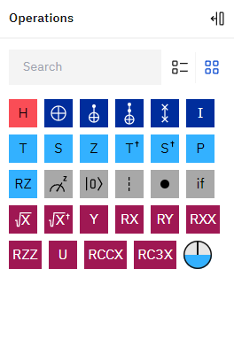
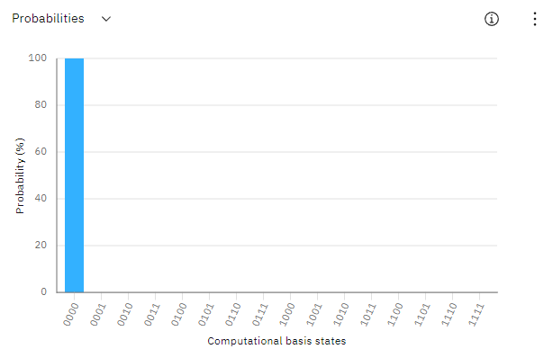
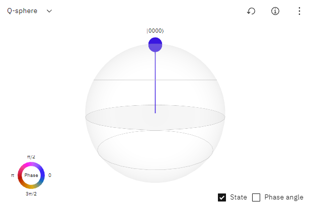

منصة IBM
IBM Quantum Composer
تقدم شركة IBM تجربة رائعة من خلال عدة منصات اهمها (IBM Quantum Composer) و تهتم هذه المنصة في توفير بيئة تحاكي الحاسوب الكمي.
و اذا اردت ان تقوم معمل محاكة واستخدام حاسوب كمي حقيقي فأنك تستطيع استخدام 5 او 7 كيوبت فقط كحد اعلى اما اذا اردت ان تعمل على محاكة لحاسوب كمي يحاكي الحاسوب الكمي الحقيقي فأنك تستطيع استخدام كاقصى حد 5000 كيوبت حيث يتواجد داخل هذه المنصة العديد من البوابات الكمومية الاساسية مثل بوابة هدامارت التي تقوم بوضع الكيوبت في الوضع الفائق و بوابات اخرى
Main
هنا تقون بوضع البوابات و غيرها
Operstions

هناك العديد من من الخانات التي تقع تحت خانة العمليات
1- Hadamard
2- Classical
• NOT gate
• CNOT gate
• Toffoli gate
• Identity gate
3- phase
• T gate
• S gate
• Z gate
• Tdg or Tdagger gate
• Sdg or S-dagger gate
• Phase gate
• RZ gate
4- Non-unitary & modifiers
• Measurement
• Reset
• Barrier
• Control
• Conditional
languages OpenQASM and QisKit
تتيح لك هذه الخانة عرض للغتي البرمجة الكمومية openQASM 2.0 and Qiskit
بعد اجراء التعديلات و العمليات على الكيوبت و البوابات الكمومية فتمثل ما فعلته بلغة الكود لاحد هاتين اللغتان اما عن مجال التعديل على الكود او العمل بشكل عكسي اي كتابة الكود وتطبيقه على الكيوبت فان openQASM تطيح لك المجال لهاذا اما بلنسبة الى Qiskit لا تستطيع اجراء اي تعديل فقط عملية قراءة الكود
Probabilities

من خلال هذه الخانة الموقع يعرض لك الاحتمالات لعدد من الكيوبت
Q-Sphere

و تتيح هذه الخانة بعرض الحالة الكمومية للكيوبت على كرة سفير التي قمنا بشرحها سابقا و الحد الاعلى لعدد الكيوبت الممكن للتمثيل هو 5
IBM Quantum Lab
Develop quantum experiments in Qiskit
يتيح لك الموقع الكتابة باستخدام كسكت حيث تقوم بترجمة الكود و تطبيقه إما على حوسبة سحابية مرتبطة بحاسوب كمي حقيقي مكون من عدد كيوبت قليل أو تشغيل الكود على حوسبة سحابية محاكية للحاسوب الكمي و تتيح لك استخدام عدد أكبر بكثير من الكيوبت عنها من الطريقة الأولى